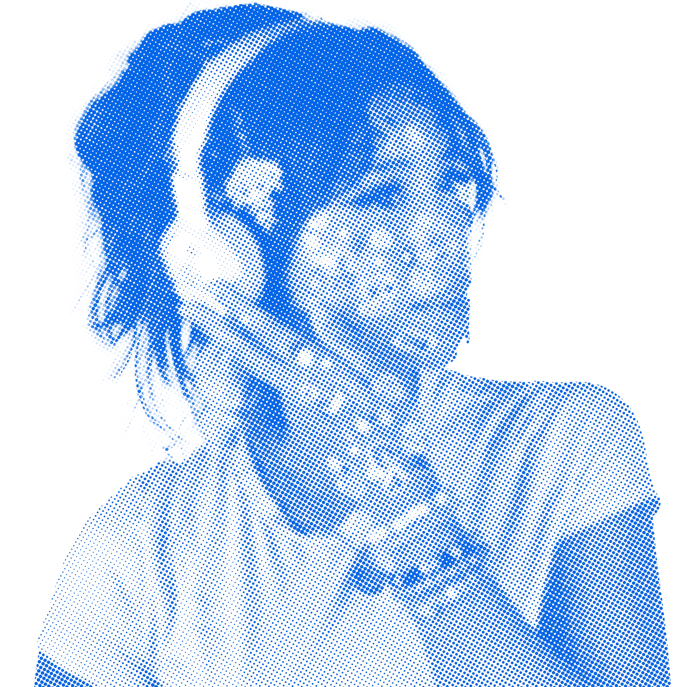

You've stumbled across my personal sketch archive, a place where I keep old pieces, unfinished thoughts, and ideas I couldn't let go of.
Take your time to explore. You're not interrupting anything.
Into the pages ↓Why does this site exist? To put it in the most crude way possible, I have too much stuff. I’ve been an artist all my life, drawing and filling every sketchbook that I could get my hands on. And as someone with a bit of a sentimental hoarding problem, you can imagine how much “junk” I’ve accumulated from this passion of mine. With this site, I can dump everything without having to worry about the space.
I like the honesty of showcasing and sharing work that never reached a final, polished version. It’s also just plain fun to look back and see how I’ve grown and maybe even start up old projects and ideas from the past!
2/12 Created the first home page, woohoo!